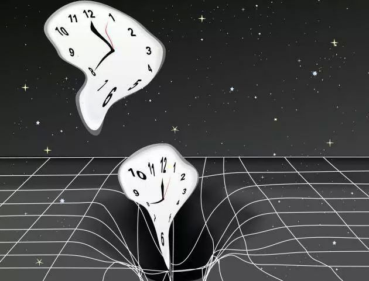

پێش پێشەکیا تیۆرا ڕێژەیی ل ساڵا ١٩٠٥، ئەنیشتاین سەلماند کو دەم یێ ڕێژەیی یە! ئەگەر مرۆڤ نێزیکی هێزەکا کێشکردنا یەکجار مەزن ببیت یان ب خێراییەکا نێزیک خێرایییا ڕوناهیێ ب لڤیت، دەم ل دەڤ وی گەلەک خاڤ دبیت بەراورد دگەل سەر عەردی. ئانکو چەند چرکەک ل وێ دەرێ، یەکسانە ب ساڵان ل سەر عەردی.
"...وَإِنَّ يَوْمًا عِندَ رَبِّكَ كَأَلْفِ سَنَةٍ مِّمَّا تَعُدُّونَ"
الحج: ٤٧ - "...و ب ڕاستی ڕۆژەک ل دەڤ پەروەردگارێ تە، وەک هەزار ساڵانە ژ وان ساڵێن تسا هوین دهەژمێرن."
"تَعْرُجُ... فِي يَوْمٍ كَانَ مِقْدَارُهُ خَمْسِينَ أَلْفَ سَنَةٍ"
المعارج: ٤ - "...د ڕۆژەکێ دا کو کۆنتڕ و مقدارێ وێ پێنجی هەزار ساڵە (ل سەر عەردی)."